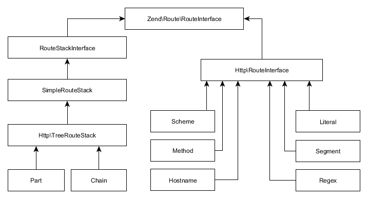
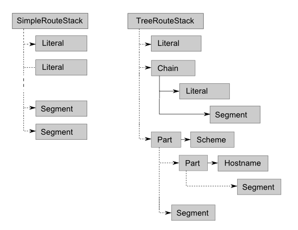

5.3. Combining Route Types
Routes may be combined with the help of "aggregate" route types (shown in table 5.2). The compound route types allow to define arbitrarily complex URL mapping rules.
| Route Type | Description |
|---|---|
| SimpleRouteStack | Aggregates different route types in a list with priorities. |
| TreeRouteStack | Aggregates different route types in a tree-like structure. |
| Part | Aggregates different route types in a subtree. |
| Chain | Aggregates different route types in a chain (degenerated subtree). |
The TreeRouteStack and SimpleRouteStack are used as the "top-level" route types.
The SimpleRouteStack allows to organize different routes in a priority list.
The TreeRouteStack allows to nest different routes, forming a "tree".
Figure 5.2 shows the route class inheritance diagram.
 Figure 5.2. Route class inheritance diagram
As you can see from the image, all route classes are inherited from RouteInterface interface (we
will learn this interface in details in the Writing Own Route Type section later in this
chapter). The SimpleRouteStack is a parent class for TreeRouteStack class, which
inherits the behavior of the simple route stack (allows to organize routes in priority list) and
extends it (allows to organize routes in subtrees). The Part and Chain classes are
derived from TreeRouteStack class and are used internally by the TreeRouteStack for building
subtrees and chains of child routes.
5.3.1. Simple Route Stack
The SimpleRouteStack allows to combine different routes in a priority list.
For an example of such a list, look at the route stack in the left part of figure 5.3.
The example list contains several Literal routes and several Segment routes.
When matching against the HTTP request, the SimpleRouteStack walks through the list
of routes and tries to match each route in turn. Each route in the list has a priority;
the routes with the higher priority are visited first. The lookup is finished once some route matches
the HTTP request. If none of the routes match, the "not found" error is raised.
 Figure 5.3. An example of Simple Route Stack (left) and Tree Route Stack (right)
5.3.2. Tree Route Stack
The TreeRouteStack class extends the SimpleRouteStack class, which means it can
organize routes in a priority list, plus it provides an ability to nest routes in subtrees
and chains. An example tree route stack is presented in the right part of figure 5.3.
The list contains of one Literal route, a chain of Literal and Segment routes,
and a subtree consisting of two branches: a branch containing a single Segment route,
and a branch consisting of Scheme, Hostname and Segment routes.
The tree route stack performs request matching in the following way. It walks through
its priority list items (denoted by dashed lines in figure 5.3), starting from high-priority routes. If a certain item is
a Chain route or a Part route, it processes such a nested route from its parent route to children.
If the parent route matches, the children (denoted with solid lines) are analyzed then. The nested route is considered matching
if at least one route matches in each tree (or chain) level.
Each route in a tree (or chain) consumes a part of the URL (figure 5.4). The parent route is matched against the first part of the URL, its child is matched again the next part, and so on, until the end of the URL string is reached.
 Figure 5.4. An example of nested route matching
Figure 5.4. An example of nested route matching